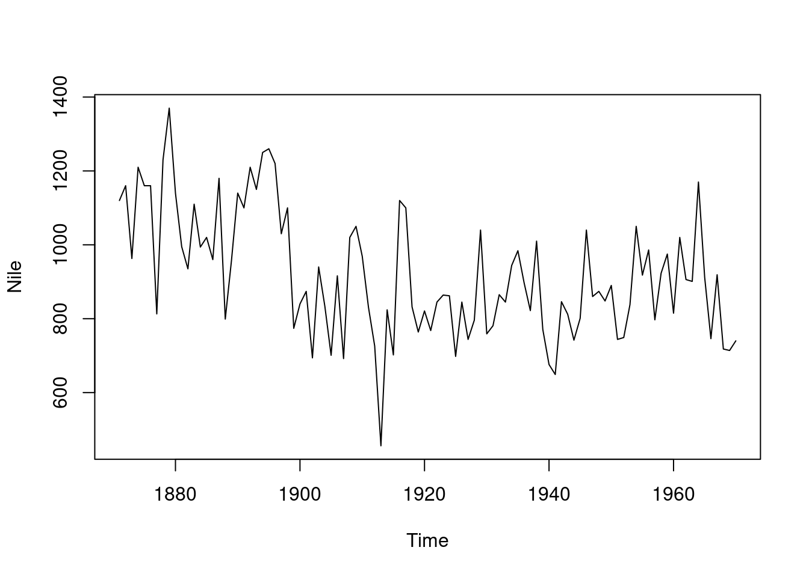
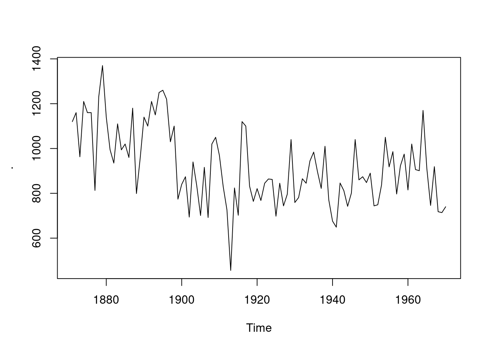

by_cyl %>%
map(~ lm(mpg ~ wt, data = .x)) %>%
map(coef) %>%
map_dbl(2)5 The Tidyverse
As I’ve already admitted, my knowledge of the Tidyverse is much less than my knowledge of base R. However, no critique of R is complete without at least giving this a mention. Its popularity, along with R version 4.0.6. adopting some its ideas (pipes and a shorter anonymous function syntax), are clear evidence that it’s on to something. Before going in to the specific libraries, I’ve given some general thoughts below. You may also be interested in Hadley Wickham’s comments on this section. Particularly with regards to purrr, I was surprised by how much we agree (look inside the changes made in the pull request).
- I can’t back down from the “polished turd” point that I made earlier. No matter how good the Tidyverse is, any attempt to fix R’s inconsistencies by making new libraries is doomed to fail. Base R is inconsistent, so the only way to be consistent with it is to be inconsistent. For example,
as.foo()is inconsistent with R’s S3 system, but it’s what I’d expect to find with a new class calledfooin a library. The only solution to this problem is to somehow write code that completely ignores base R, but that becomes impossible as soon as you try to load anyone else’s packages. - I’m sure that I’ve seen the main author of the Tidyverse quoted as saying that he didn’t want it to be a monolith. However, it undeniably is one. Tidyverse packages will throw errors with
rlang, be made specifically to work with other Tidyverse packages (see the first paragraph of the manifesto), and deprecate their own functions in favour of functions from different Tidyverse packages. - For the reasons explained earlier, the authors are very scared of the
...argument’s ability to pass arguments to where they should not have gone. To counter this, most of the Tidyverse functions use names that you would never type. This means that without an IDE prompting you, you’re going to get a lot of the argument names wrong. I’ve slipped up withtibble’s.name_repairargument a few times. Get it wrong and R probably won’t let you know! - I really understand the “consistent interface” selling point of the Tidyverse. Because of the
[x]/[x,]/[,x]business, I often guess wrong with functions likebase::order(), but I almost never guess wrong withdplyr::arrange(). - The API of the Tidyverse is rarely stable; It constantly deprecates functions and owns up to its willingness to do so. I understand the value of not being tied to your past mistakes – see my many complaints about base R’s interest in supporting S – but it’s rare that I look through the documentation for a Tidyverse package and not see a note saying that something either is deprecated or soon will be. It’s even worse when I see a Stack Overflow answer with just the function that I need, only to find that my newer version of the package doesn’t even have the old function. However, the worst example by far is when the R for Data Science book can’t keep up with the deprecation. For example, when I read chapter 25, the code in the book was spitting out warnings about the
.dropargument tounnest()being deprecated. Importing a package when making your own package is already a risky proposition, but issues like this would have me do all of my work in base R even if there was a perfect Tidyverse function for the job. - The Tidyverse is undeniably designed around piping (see the second point of the manifesto). It’s not obvious that piping is a good framework to build around. To keep pipes simple, you must build functions that are easy to compose. This means that you will design your functions to have the minimum number of arguments that you can get away with. If you need more arguments, then you will instead make more functions wherever possible. This is a significant increase in complexity. Surely arguments are less complicated than functions? I dread to think what it takes to replicate a function like
aggregate()in the Tidyverse. Even something as simple asdplyr::select()has about 10 helper functions in its documentation. I’m willing to be proven wrong here, but everything that I’ve just said strikes me as obviously true to anyone who has useddplyrorpurrr.- Hadley’s comments, linked above, point to the
tidyrpackage as a strong counterexample to my claim that the argument count must be minimised in a pipe-based design. They also mention that there’s no obvious better way to designdplyr::select(). On all counts, I have no counterargument. However, I’m confident that I’m still on to something here, even if my original points are wrong. Pipes must come at a cost, but it appears that I’ve incorrectly identified what that cost is.
- Hadley’s comments, linked above, point to the
Overall, I’m more than happy to use Tidyverse functions when I’m writing some run-once code or messing around in the REPL, but the unstable API point is a real killer for anything else. In terms of how it compares to base R, I’d rather use quite a few of its packages than their base R equivalents. However, that doesn’t mean that it can actually replace base R. I see it as nothing more than a handy set of libraries.
Now for the specific libraries. Assume that I’m ignorant of any that I’ve skipped.
5.1 Dplyr
- I don’t like how it has name conflicts with the base R stats library. It just seems rude.
- Remember all of my complaints about base R’s subsetting and how I’d rather use the non-standard evaluation functions if it weren’t for all of their vague warnings?
dplyrcompletely nullifies most of these complains, for data frames at least. This is a huge win for the Tidyverse. - R’s factor variables are scary.
dplyr::group_by()takes a more SQL-like approach to the problem and feels a lot safer to work with. - Compared to base R, the knowledge that
dplyrwill only output a tibble is a relief. There’s no need to consider if I needtapply(),by(), oraggregate()for a job or if I need to coerce my input in order to go in/out of functions liketable(). I therefore need to do a lot less guessing. This link demonstrates it better than I can, although the formula solution withaggregate()is in base R’s favour. dplyr::mutate()is just plain better than base R’stransform(). In particular, it allow you to refer to columns that you’ve just created.- This link shows a comparison between base R and
dplyr. It’s rather persuasive. In particular, it gives you the sense that you can make safe guesses about thedplyrfunctions. - I need to play around with it more, but I think that
pivot_wider()’svalues_fnargument makesdplyrthe only tool that I’ve ever seen that allows arbitrary functions in a pivot table. - I don’t like how the
dplyrfunctions only accept data frame or objects derived from them. If I’m doing some work with something likestringr, I instinctively want to use a Tidyverse solution to problems like subsetting my inputs. However, if I reach fordplyr::filter(), I get errors due to character vector not being data frames. This isn’t reallydplyr’s fault and they shouldn’t try to fix it, but it’s still a minor annoyance.
5.2 Ggplot2
- To repeat my earlier praise for this library, it’s fun. That’s a huge win.
- It has amazingly sane defaults. Whenever I make the same graph in both this and base R’s
plot(),ggplot2’s is much better. You can tell R to do stuff like include a useful legend or grid, butggplot2does it by default. - I like how graphs are made by what amounts to composing functions. It makes it very easy to focus on one specific element of your plots at a time. I’d even go as far as say that it’s fun to see what happens when you replace a component with another valid but strange one. You can discover entirely new categories of graphs by accident.
- I miss the genericness of base R’s
plot(). When I can’t be bothered to think about what sort of plot I need,plot()can save me the trouble by making a correct guess. There is no such facility inggplot2. Hadley’s comments have pointed outautoplot(), but I’ve never gotten it to work. There are no examples in its documentation and I’ve not found all that much help online.
5.3 Lubridate
I don’t use dates much, so I don’t have much to say. In fact, I don’t think that I’ve mentioned them before now. lubridate appears to be much easier to use than base R dates and times, but I know neither very well. I don’t like how base R seems to force you to do any time arithmetic in seconds and date arithmetic in days. I also don’t like how it’s hard to do arithmetic with times in base R without a date being attached. However, I could be wrong about all of that. I really don’t know any of them too well and I’ve never found much reason to learn. I’d really like to see https://rosettacode.org/wiki/Convert_seconds_to_compound_duration solved in both base R and lubridate. I’m not saying that it would be hard, but I’d love to see the comparison. Overall, all that I can really say for certain is that experience has shown that when the day comes, I’ll have a much easier time learning this package than what base R offers for the same jobs.
5.4 Magrittr
Pipes come in very handy, but I’ve never been completely sold on them, even when viewing teaching examples that are supposed to demonstrate their superiority. I’ll admit that there is a time and a place for them – e.g. printing and graphing code – but I think that they only really shine when you’ve abandoned base R in favour of purrr. After all, base R wasn’t built for pipes. I’d even go as far as to say that the people who swear by magrittr and purrr have adopted a completely different paradigm to those who don’t, so they end up using totally different tools. For example, a master of the Tidyverse finds Advanced R chapter nine’s
just as informative as my lapply(by_cyl, function(x) lm(mpg ~ wt, data = x)$coef[[2]]) (or its equivalent sapply() or vapply(), if you really insist). Overall, I think that I can’t evaluate magrittr without also evaluating purrr.
As a side-note, the claim that foo %>% bar() is equivalent to bar(foo) appears to be a white lie. Try it with a plotting function that cares about the variable name of its argument. Spot the difference:
plot(Nile)
library(magrittr)
Nile %>% plot()
Nile |> plot() #The same as plot(Nile)
Don’t get me wrong, I like pipes a lot. When you’re dealing with data, there’s sometimes no way to avoid “do foo() to my data and then do bar()” code. However, you’d be mad to use them all of the time. For people that do use them, all that I can say is that you should take the time to learn all of them and that said time really isn’t much. None of them are much more complicated than %>% and %$% is a handy replacement for with().
As a final point, I don’t like how much trouble base R’s new |> pipe causes me. You can’t do x |> foo. You instead need x |> foo(). Also, to use a function where the target argument isn’t first, you need to use some nonsense like x |> (function(x) foo(bar, x))(). For example, mtcars |> (function(x) Map(max, x))(). I don’t like all of those extra brackets. magrittr can do it with just mtcars %>% (function(x) Map(max, x)) or even mtcars %>% Map(max, .). Regardless, base R’s pipe is still new, so perhaps I’m judging it too early. It appears that future versions will expand it.
5.5 Purrr
Unlike base R, where I can point to a specific example and explain to you why it’s silly, my objections to purrr are mostly philosophical. It certainly does some things much better than base R. For example, I really like the consistency in the map functions. They’re a breath of fresh air compared to base R’s apply family vs funprog mess. My code would probably be a lot easier to read and modify if I replaced all of my apply family and funprog calls with their purrr equivalents. However, when writing the code in the first place, I’d much rather have the flexibility that the base R functions offer. I also like pluck() and it being built in to the map functions, but I’ve yet to get used to it. Overall, I wouldn’t mind using purrr, but I have some major objections:
- It takes the idea of “a function should only do one thing” to a pathological level. I see no reason why
map_lgl(),map_int(),map_dbl(), andmap_chr()are separate functions. They do exactly the same thing, but will throw an error if they don’t get the return type in their name. Why isn’t this the job of some general mapping function that takes the desired output type as an argument (e.g. like base R’svapply())? This same issue is found in the entire library. There is no need for themap2()andpmap()functions or their countless _type variants. Just make a generalmap()function! To steal a point from the TidyverseSkeptic essay,purrrhas 178 functions, and 52 are maps. What would you rather learn: a handful of complex map functions (like base R) or 52 simple ones? The only defences that I’ve seen for thepurrrapproach is that base R can be a bit verbose, e.g.vapply()’s arguments likeFUN.VALUE = logical(1), and that using the most restrictive possible tool for any given job increases the readability of your code. - It makes base R’s
~operator able to form anonymous functions, at least withinpurrr(it’s some funky parsing). I could get used to it, but I don’t like how it robs the user of the ability to give the arguments to their anonymous function any meaningful names. This is because thepurrrauthors thought that the normal anonymous function syntax was too verbose, but I’d argue that they’ve gone too far and made their syntax too terse.Map(function(x) runif(1), 1:3)is not long or particularly obscure, butmap(1:3, ~ runif(1))crosses the line for me, as doesmap(data, ~ .x * 2). My example in the previous section, which includedmap(~ lm(mpg ~ wt, data = .x)), demonstrates another problem: It overloads the~operator in a dangerous way. The~inside themap()is very different from the~in the call tolm(). - I suspect that my above two points interact. Could it be that
purrrusers don’t use a generalised map function because they’ve written off base R’s anonymous function syntax and replaced it with a variant that is so terse that their code becomes unreadable without the names of their functions telling the reader what they’re doing?
Overall, I could probably be convinced that purrr’s way is better than base R’s, but I doubt that purrr’s way is the best way.
5.6 Stringr and Tibble
For me, these both fall in to the same box. They’re not particularly outstanding, but they’re clearly much better than their base R equivalents. I’ve praised tibble enough already and have said plenty about the state of R’s strings. The only thing that I’ve got left to say is that once you’ve noticed that tibbles let you use the columns that you’ve just defined to define other columns, you really start to hate how many extra lines of code you have to write when using data frames for the same task.